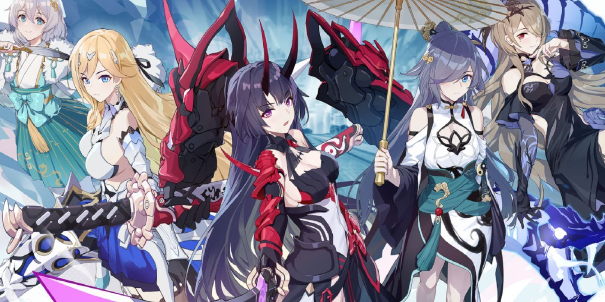

Esta guía esta destinada para jugadores que no sean superior del nivel 50 de honkai
Cada jugador tiene las siguientes incognitas; ¿De qué trata este juego?, ¿porqué está en inglés?, ¿cómo se juega?, ¿cuáles son las mejores opciones para iniciar?, etc.
Es bien sabido que este es un juego de gacha, pero en sí ¿qué es un juego de gacha?
Los juegos de gacha son conocidos como juegos de formato de microtransacciones, estos son juegos cuyo contenido debes desbloquear ya sea por medio de pago o tirar con las monedas del juego que vayas adquiriendo.
Entoncess... ¿Cómo puedo tener la mejor esperiencia en este?
En esta guía conoceras lo mas escencial para tener un buen inicio
Primero.. ¿De que trata el juego a nivel jugabilístico?
Honkai impact es un juego cuyo estilo de gameplay se juega con tus personajes que irás desbloqueando para poder hacer toda clase de retos. Desde hacer el modo historia, o jugar todo el contenido que este te pueda ofrecer
Este juego tiene su formato clásico jugando con equipos de slot hasta de 3 personajes o 1 dependiendo de cual modo jueges
Primero debes entender como se forman los equipos.

Valkirias
Los equipos estan formados por valkirias las cuales nos permitiran hacer diversas tareas según los roles que estas desempeñen
valkirias:
tipos:
elementos:
Daño por segundo
Psiquicas
Fuego
Soporte
Biológico
Hielo
sub atacantes
Mecánico
Electricidad
-
Cuánticas
Físicas
-
Imaginarias
-
¿Porqué debo saber sus tipos?
En este juego debemos entender que hay un sistema puedra, papel o tijeras
Por ejemplo para los tipos: Psiquicas derrotan a mecanicas, mecanicas derrotan a biologicas y las biologicas derrotan a las psiquicas.
Pero tambien hay que entender que los elementos benefician mucho el daño final que se puede hacer para derrotar a diversos jefes.
Esto irá en función al modo de juego, este derteminará cuál es el elemento más poderoso
Con esto en mente ya tienes idea de como funciona el sistema de combate en este juego: Por recomendación usa un rol de valkiria diferente por cada slot en tu equipo, el clásico es el dps, support, sub atacante/support
Con esto en mente a continuación en la siguiente página verás una recomendación de los banners y la importancia de los mismo a la hora de conseguir recursos